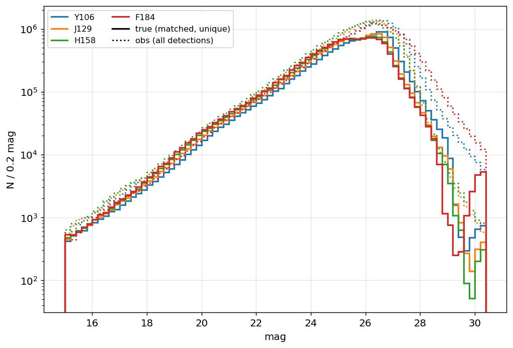
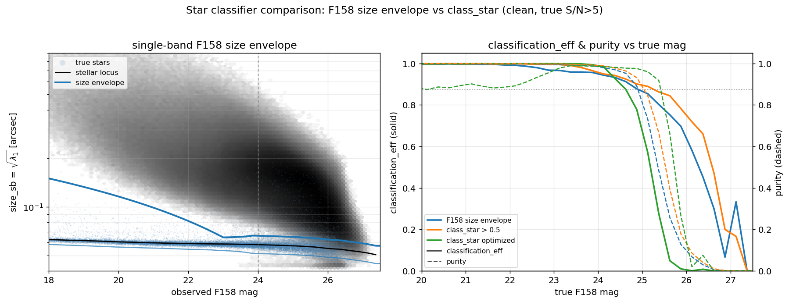
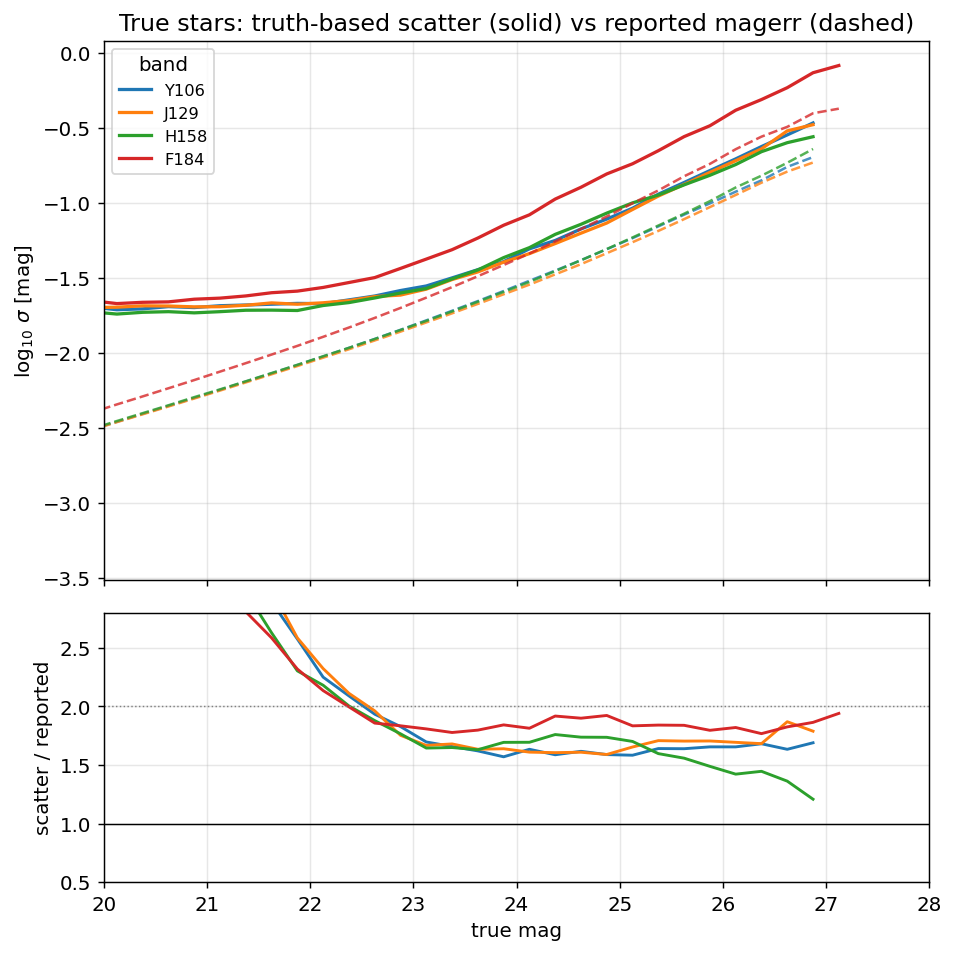
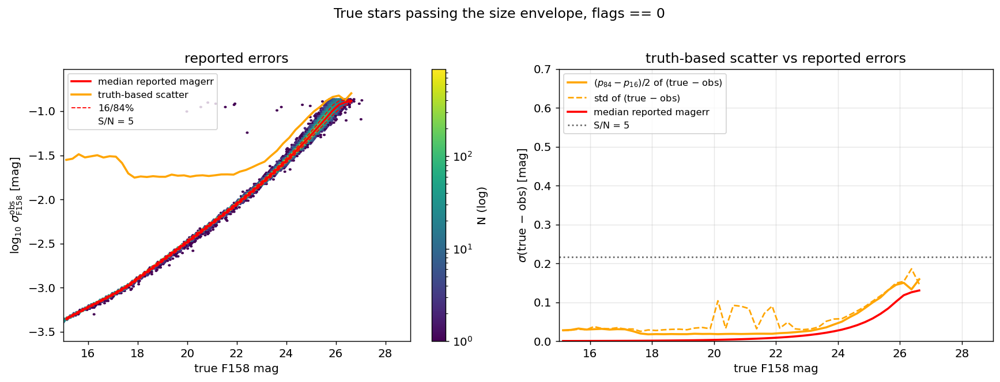
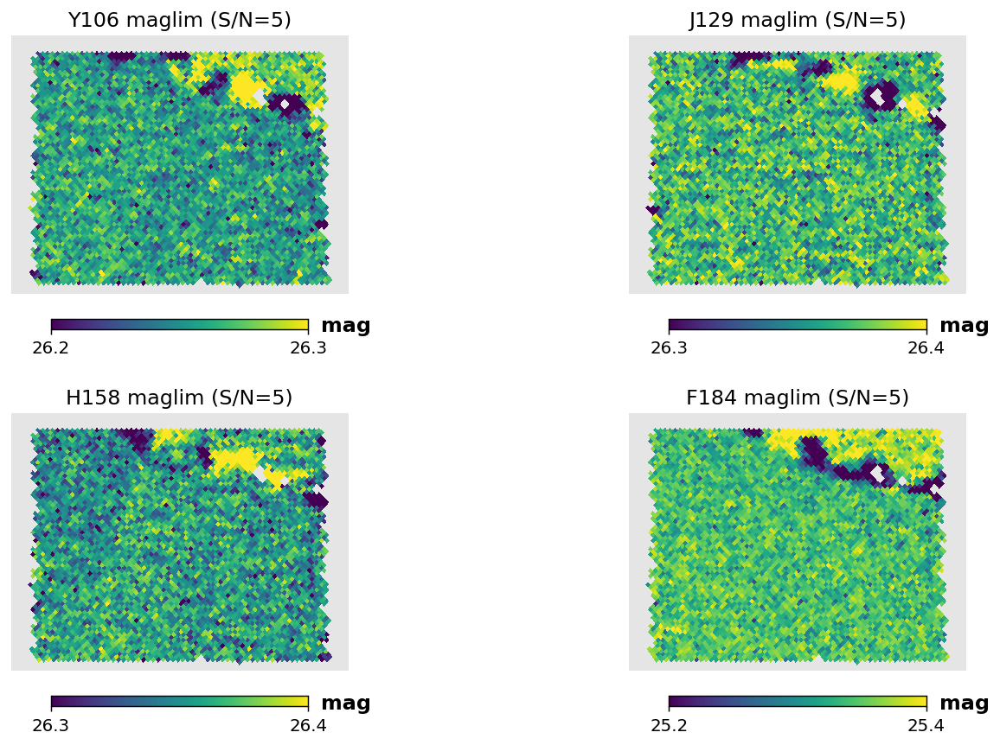
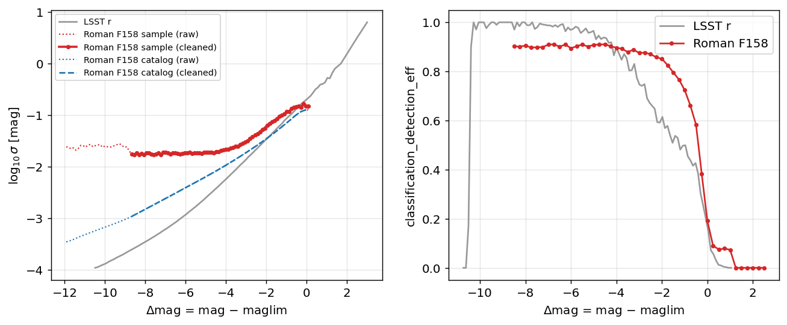

Roman DC2 Survey Files#
This page is the data sheet for the roman / dc2 release: the survey-specific
numbers, products, and figures. For how these products are derived (the matched
detection→truth catalog, the size-envelope classifier, the two-curve photo-error
model + afterburner, the truth-anchored depth maps, the analysis selections), see the
survey-agnostic :doc:selection_function_methodology.
The simulated survey#
All quantities are measured from the Roman–Rubin DC2 synthetic survey of
Troxel et al. (2023): ~20 deg² of image-level
simulations of the Roman High Latitude Imaging Survey reference design at full depth,
reaching a 5σ point-source depth of ~26.9 AB in the F106/F129/F158 bands and 26.2 AB
in F184. Stars are drawn from a Galfast model of the Galaxy and galaxies from the
cosmoDC2 extragalactic catalog. Object detection and photometry are performed with
SExtractor on a median F106+F129+F158+F184 coadd detection image (segmentation at
2.5σ, minimum area 5 pixels; deblending DEBLEND_NTHRESH=48,
DEBLEND_MINCONT=0.05), with forced photometry per band over 1039 coadd tiles. The
recommended catalog-level selection of S/N > 5 in the detection image is applied on
top of this. Each tile provides a detection catalog and a truth index of every
simulated object with its position, four-band magnitudes, and a star/galaxy label.
The matched detection→truth catalog is built by
scripts/roman/build_roman_dc2_det_truth.py; its construction (the per-tile 1″
positional match, the flags == 0 + true-S/N>5 selections) is described in the
:doc:selection_function_methodology. The measured F158 error inflation factor
is 1.59, so the true-S/N>5 cut is set at reported magerr_auto_H158 < 0.137,
keeping 69% of the catalog.

Number counts (color = band): solid — true magnitudes of matched sources; dotted —
observed mag_auto of all S/N>5 detections. The turnover at ~26–26.5 reflects the
survey depth.
Stellar completeness and classification#
roman_stellar_efficiency_cutf158.csv gives, in bins of true F158 magnitude for true
stars: detection_eff (fraction with a clean true-S/N>5-in-F158 detection, against
the full truth-star denominator), classification_eff (fraction of those detected
stars classified as point sources by the F158 size envelope), and
classification_detection_eff (their product). The classifier is explained on the
methodology page; the loader also accepts the legacy misspelled classifiction_eff
column name for older/Zenodo data packages.

Left: the single-band F158 size–magnitude plane (greyscale: true galaxies; blue:
true stars) with the size-envelope boundaries and the freeze magnitude marked. Right:
classification efficiency (solid) and purity (dashed) vs true F158 magnitude for the
F158 size envelope, the fixed class_star > 0.5 cut, and a per-magnitude-optimized
class_star threshold, on the clean true-S/N>5 sample.
The bright plateau sits at ~0.91 (not unity) and is flat with magnitude — the
signature of the flags == 0 cut, not depth: of the ~9% of bright (F158 18–21) true
stars missing, ~7% are matched but flag-rejected (blends/wings/saturation) and ~3%
have no clean detection because the detection-centric match assigned their blend to a
brighter source. Detection alone crosses 50% at F158 ≈ 26.2 (≈ the F158 maglim 26.38,
as expected for an F158 S/N=5 gate); the combined efficiency crosses 50% at F158 ≈
26.0 at reference depth.

Detection and classification efficiency for true stars, with the misclassification rate of detected compact (<0.3″) true galaxies on the same axes (below 1% brighter than F158 ≈ 25.5, rising to ~5% toward the faint end).
The standalone galaxy-misclassification product (roman_galaxy_misclass_cutf158.csv,
columns delta_mag, mag_F158, classification_eff) and the merged LSST↔Roman table
(roman_lsst_matched.parquet) are built by
scripts/roman/build_roman_galaxy_misclass.py. The compact-galaxy size currently
uses the interim measured-Roman proxy (SIZE_SOURCE=measured_roman); the cosmoDC2
true-size upgrade is wired but pending the NERSC size_true fetch.
Photometric errors#
The reported magerr_auto underestimates the truth-based scatter of (obs − true) by
a flat factor ≈2 in all four bands (underestimated correlated coadd noise), so the
error model is built from the truth-based scatter — see the methodology page.

Truth-based scatter (solid) vs median reported magerr_auto (dashed) for true stars
per band; ratio ≈2 in every band (lower panel).

F158 errors for star-classified true stars: reported magerr_auto (red), the
truth-based scatter adopted for the model (orange), and the (true − obs) scatter
under-covered by the reported errors by ≈2 (right).
The two runtime curves are roman_photoerror_f158.csv (sample / truth-based scatter,
drives the noise draw) and roman_photoerror_f158_catalog.csv (median reported
magerr, drives the S/N cut). The afterburner corrections live in the tracked
config/surveys/roman_photoerror_corrections.yaml:
F158_sample (
clamp_faint): floorlog_mag_errto −0.8285 fordelta_mag ≥ −0.28(holds the truth-scatter at its last well-sampled value, σ ≈ 0.148, rather than propagating small-sample noise).F158_catalog (
clamp_faint): floorlog_mag_errto −0.8960 fordelta_mag ≥ 0.0(removes a 0.003-dex reversal in the last bin).
Survey depth#
Depth maps are per-band, nside=1024 (ring), via the desqr recipe, then
truth-anchored (median shifted to the S/N=5 magnitude of the truth-based
scatter). The anchored medians are 26.28 / 26.38 / 26.38 / 25.35 in
F106/F129/F158/F184. These sit ~0.5–0.85 mag brighter than the official expected
point-source depths (26.9/26.2) because they describe what the catalog’s mag_auto
delivers in true-magnitude space, not optimal-PSF photometry.

Truth-anchored S/N=5 maglim maps over the DC2 footprint (RA 51–56, Dec −42 to −38).
The delta_mag axes of the completeness and photo-error tables are keyed to the
median of the F158 map (26.38), so maps and tables share one convention. A map for a
different footprint (e.g. the exposure-scaled HLWAS tiers, :doc:roman_hlwas) must be
expressed in this same DC2-relative convention.

Roman F158 photo-error and combined-efficiency tables vs the LSST r-band tables in
the shared delta_mag = mag − maglim convention.
Zeropoints and extinction coefficients#
Official Roman WFI AB zeropoints (effective-area curves of 2024-03-01, from the Roman technical information repository; range = detector-to-detector variation WFI01–WFI18):
Filter |
AB zeropoint |
mean |
|---|---|---|
F106 |
26.31 – 26.44 |
26.36 |
F129 |
26.30 – 26.47 |
26.37 |
F158 |
26.34 – 26.46 |
26.39 |
These agree with Roman-STScI-000825 Table 3 (Z = 26.3546/26.3531/26.3760, σ_Z ≈ 0.033–0.038). The mock’s photometry is calibrated greyly; measured offsets are +0.11/+0.10/+0.12 mag in F106/F129/F158. F184 needs an underived chromatic correction and is excluded (it is also deep-tier-only in the community-defined HLWAS).
Adopted extinction coefficients are the official STScI values from Roman-STScI-000825 (Sharma, Table 3):
Filter |
A_band / E(B−V) |
|---|---|
F106 |
1.1495 |
F129 |
0.8497 |
F158 |
0.6140 |
The shape is validated against the mock: the truth dereddening band ratios 1.88 (F106/F158) and 1.37 (F129/F158) match the official ratios (1.87, 1.38) to ~1%. (Absolute amplitudes can’t be cross-checked — the mock omits MW extinction — but A_F158 ≈ 0.01 mag at E(B−V) = 0.013 in typical high-latitude fields.)
Using the survey in streamobs#
Configured by config/surveys/roman_dc2.yaml, data in data/surveys/roman_dc2/:
from streamobs.surveys import SurveyFactory
survey = SurveyFactory.create_survey("roman", release="dc2")
maglim = survey.get_maglim("F158", pixel=pix)
completeness = survey.get_completeness("F158", mag, maglim)
photo_error = survey.get_photo_error("F158", mag, maglim)
All tables, maps, and figures are regenerated by
scripts/roman/create_streamobs_files_hlwas.py (the matched catalog by
scripts/roman/build_roman_dc2_det_truth.py; the galaxy-misclassification product by
scripts/roman/build_roman_galaxy_misclass.py; the shared classifier in
scripts/roman/roman_star_classifier.py).
The real-footprint HLWAS tiers reuse these DC2-derived tables with exposure-scaled
F158 maglim maps — see :doc:roman_hlwas.
Caveats#
The simulation is the reference HLIS design (deeper than the community-defined wide tier); wide-tier behaviour is obtained by translation in
delta_mag.The detection-centric match assigns a blend to its dominant source, so detection efficiency is slightly conservative for stars blended with brighter neighbours.
Saturation (pixels clip at ~1.1×10⁵ e⁻) appears brighter than mag ≈ 17 (the classification dip near 16.6 is its signature); stars brighter than 15 are not chromatically rendered. The config sets
saturation: 17.0.mag_autocarries a systematic offset vs truth (≈ +0.1–0.2 in F106/F129/F158, ≈ +0.6 in F184 at the bright end). The error model captures the scatter about this offset, not the offset itself.The detection catalogs are detector-optimistic (the “simple” detector model — read noise, dark current, saturation only; no cosmic rays, persistence, IPC, hot pixels; bright stars unmasked).